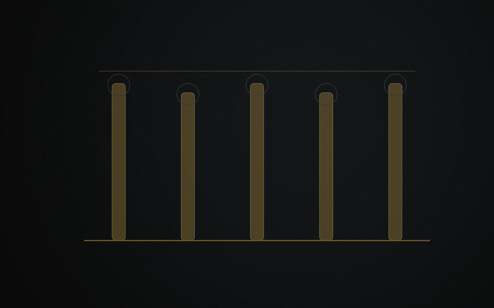
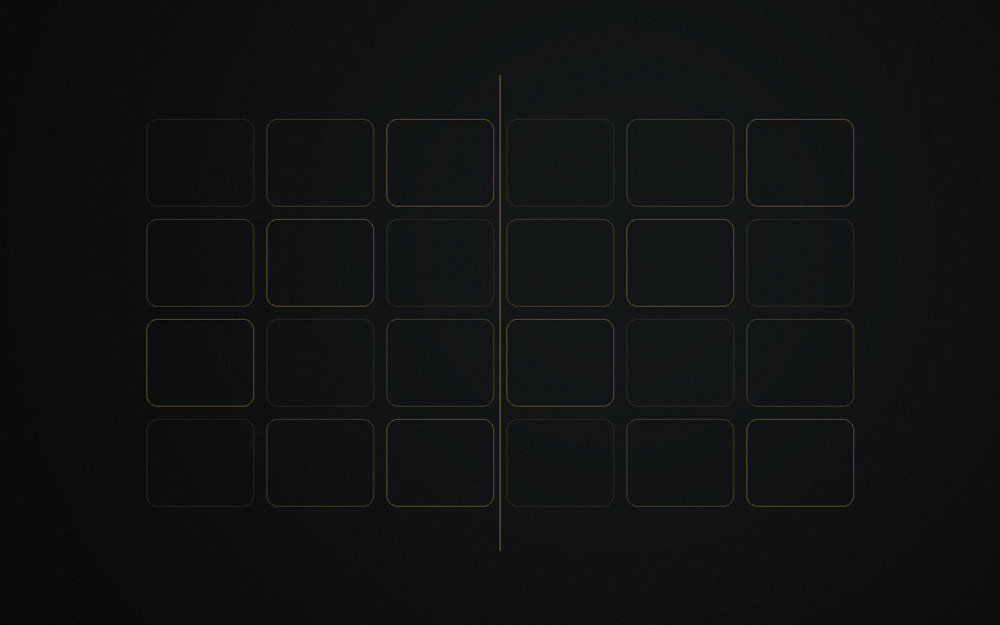

Pilotage stratégique
Garder une ligne claire entre vision, priorités et maturité réelle.
À propos
Betsaleel Holding est la structure mère. Betsaleel Groupe désigne la marque institutionnelle globale qui porte la vision, la cohérence et la trajectoire progressive de l'architecture Betsaleel.
Betsaleel Holding porte la structuration, la coordination et le pilotage stratégique. Betsaleel Groupe exprime l'identité institutionnelle du groupe, sa trajectoire globale et la cohérence entre les projets.
La holding ne se substitue pas aux projets rattachés : elle les organise, les hiérarchise et accompagne progressivement leur structuration.
Cette architecture entrepreneuriale progressive privilégie la spécialisation, la crédibilité, la prudence et la cohérence entre vision, gouvernance, impact et portefeuille.

Betsaleel Holding est conçue comme une structure mère capable de piloter, structurer, développer et investir progressivement dans des initiatives cohérentes avec ses champs de compétence.
Cette approche repose sur une logique de progression : consolider d'abord les domaines proches de l'expertise du groupe, puis élargir progressivement les champs d'intervention lorsque la cohérence, la gouvernance, la faisabilité et l'impact sont établis.
Garder une ligne claire entre vision, priorités et maturité réelle.
Donner un cadre progressif aux initiatives retenues.
Avancer selon la cohérence, la faisabilité et la capacité d'action.
Étudier uniquement des rattachements compatibles avec la trajectoire Betsaleel.
Conditionner toute démarche à la mission, à la gouvernance et à l'impact utile.
La crédibilité passe par une trajectoire lisible : partir d'actifs cohérents, structurer selon la maturité, prioriser puis consolider.
Betsaleel évite l'accumulation de projets publics sans niveau de maturité clair.
La holding concentre les efforts sur les axes les plus cohérents et les plus défendables.
Les projets sont développés progressivement avant toute exposition élargie.

L'ambition Afrique-Europe de Betsaleel repose sur la construction progressive de passerelles entrepreneuriales utiles entre territoires, savoirs, besoins et projets, sans surpromesse institutionnelle.